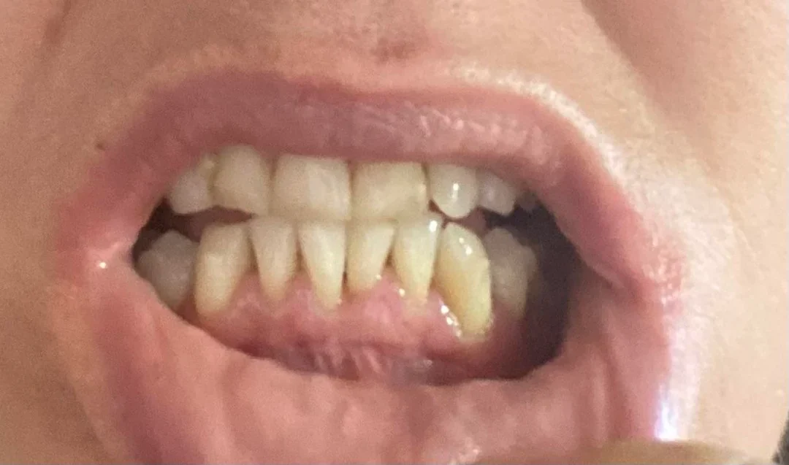
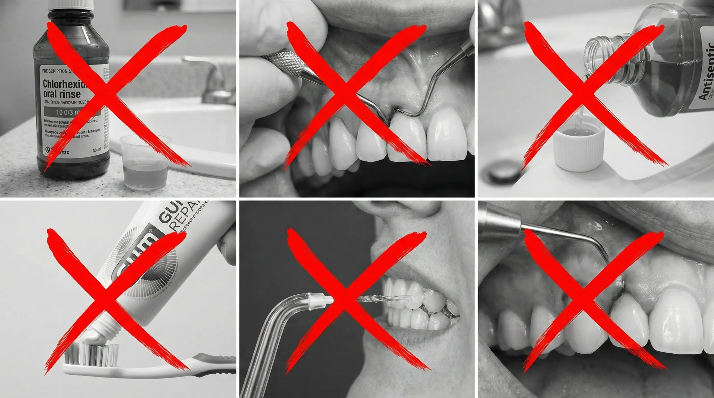
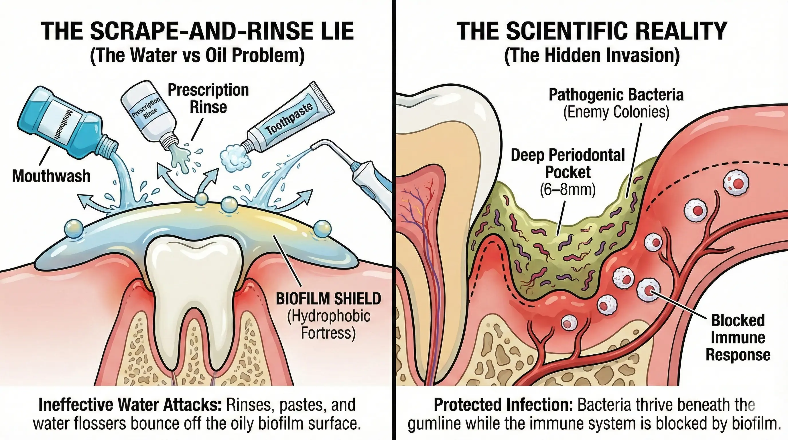
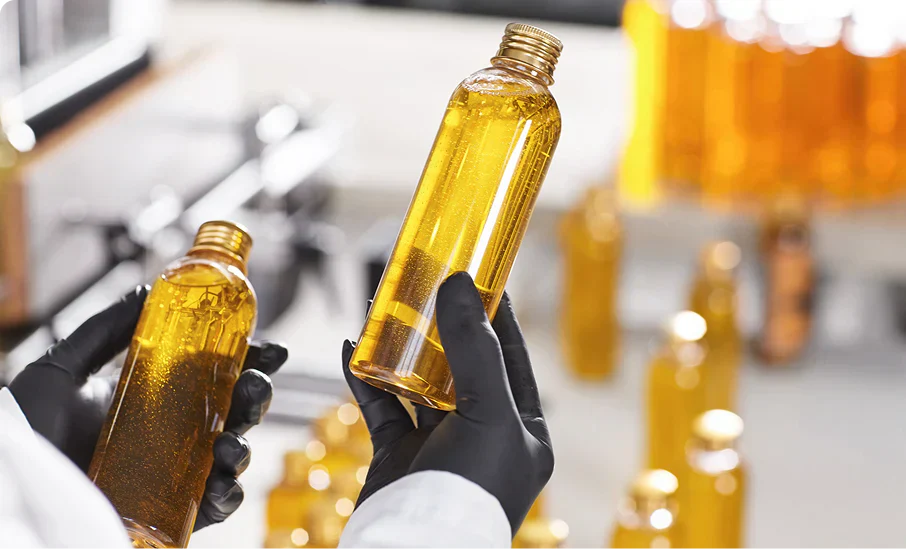
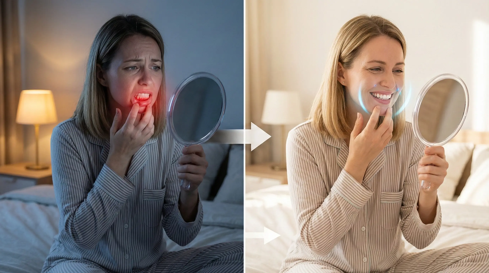
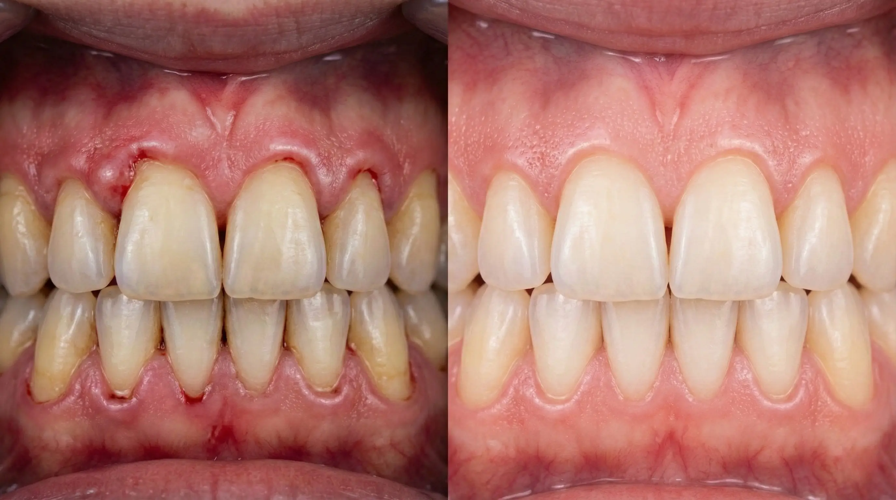
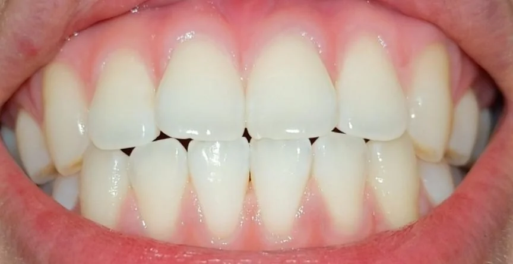

Top Periodontal Researcher Exposes the $12 Billion Secret the Receding Gums Industry Doesn't Want You to Know...
Former chronic gum-disease sufferer's husband and periodontist exposes the dental industry's "Scrape-and-Rinse Playbook" — and the single softgel that ended 14 months of bleeding, receding gums (without sandpaper pastes, mouth-scorching rinses, or $10,000 surgery).

WARNING: This page expires in 72 hours. After that, the dental establishment wins and you stay trapped in bleeding, receding gums.
I'm about to upset every periodontist and oral-care company in America.
Because what I'm about to share could cost them millions in lost "deep cleaning" revenue this year alone.
But I don't care anymore.
After watching my wife Grace suffer for 14 months…
After watching her cry in the bathroom mirror, pulling her lip back, staring at gums so red and swollen they looked like raw meat pulling away from her teeth…
After blowing $11,200 on "treatments" that did nothing lasting…
After nearly losing our 28-year marriage to the misery of it — because she was too embarrassed to attend our granddaughter Sophie's 6th birthday party, her breath so bad and her front tooth so loose she wouldn't open her mouth for a single photo…
I discovered something that changed everything.
And if you're reading this while pressing your tongue against a tooth that wiggles more than it did last month, spitting pink every time you brush, or avoiding smiling because your gumline looks like it's retreating up your teeth…
The next 5 minutes could give you your life back.
My name is Dr. Alan Reid. I've spent decades studying chronic gum disease and oral infection, and the natural compounds that actually reach it.
And I'm about to expose the dirty secret that keeps 47 million Americans trapped in bleeding, receding gums — while the dental industry laughs all the way to the bank.
But first, let me tell you about the night that shattered me…
THE NIGHT EVERYTHING CHANGED...
It was 3:47 AM. I found Grace on the bathroom floor, crying into her hands. Blood-spotted tissues in the trash. She'd been up for hours, unable to sleep through the throbbing in her gums.
"I can't do this anymore, Alan," she whispered. "My gums are pulling away from my teeth. I can see the roots. My front tooth is wiggling. I'm 58 years old and I'm going to end up with dentures like my mother."
She pressed her finger against her gumline. Blood immediately seeped out. The tissue was so inflamed, so angry and purple, that even gentle pressure made it weep.
Her toothbrush sat on the counter with pink bristles. Every single brushing ended in blood. She'd skipped two grandchildren's events in two months — her breath so bad, that deep rotting smell of infection under the gumline, she wouldn't sit close to anyone.
And I just stood there in the doorway. Useless. A researcher who couldn't even help his own wife.

This is what 14 months of "the best treatments money can buy" had left her with: a wiggling front tooth, a gumline crawling up the roots, and a smile she'd stopped showing anyone.
I'D TRIED EVERYTHING MY TRAINING TAUGHT ME

- Scaling & Root Planing (deep cleaning) — $1,600. Scraped her roots raw. Pockets went 6mm → 5mm. Within 4 months? Right back to 6mm. The bacteria just recolonized.
- Chlorhexidine prescription rinse. Stained her teeth brown, wiped out the good bacteria with the bad, food tasted like cardboard. Infection came right back the moment she stopped.
- "Periodontal repair" toothpaste — $25/tube. Gritty like sandpaper. Six months later, her pockets were deeper.
- Antibacterial mouthwash rotation. Each one burned or dried her mouth out. The moment she stopped, the bleeding was back within days.
- Waterpik water flosser. Blasted water into her pockets. But water is water-based, and the biofilm shielding the bacteria is oily. The water just beaded up and bounced right off.
- LANAP laser surgery — $10,000 out of pocket. Six weeks of soft foods. Plateaued after 5 months. Still 5mm pockets. Still bleeding.
Nothing worked for more than a few months. That night, watching the woman I love reduced to tears on the bathroom floor… something inside me snapped. I was going to figure this out. Or die trying.
THE MIND-BLOWING DISCOVERY

For the next 94 days, I lived like a man possessed. I read studies. I called researchers across nine countries. I spent thousands on medical databases the public never sees.
And what I found made me want to throw my diploma in the trash.
The entire gum-disease industry is built on a deliberate lie. A $12 billion lie that keeps you in pain, embarrassed, and reaching for your wallet every month.
Chronic gum disease is NOT a "hygiene problem" you fix with more scraping and harsher rinses. It's a BIOFILM-PENETRATION problem — caused by an oily bacterial fortress that water-based treatments physically cannot reach.
A 2020 study in the Journal of Clinical Periodontology proved that the biofilm in periodontal pockets is encased in a hydrophobic (water-repelling) matrix — and that lipid-soluble agents penetrate it 4–6x more effectively than water-based solutions. They've known for years. And they kept prescribing rinses and scheduling cleanings anyway.
THE REAL ROOT CAUSE THEY'RE HIDING

Picture the infection in your gums as a military bunker. The bacteria — P. gingivalis, T. denticola, T. forsythia — are the enemy soldiers, living deep in 6–9mm pockets. But they aren't sitting there exposed. They've built a fortress: biofilm, a slimy, oily, hydrophobic matrix that physically repels water.
1. The biofilm is hydrophobic.
When you rinse with water-based mouthwash — even prescription Chlorhexidine — the liquid hits the oily surface and beads up. It rolls right off, leaving the bacteria safe, alive, and eating your bone.
2. Water-based rinses only kill surface bacteria.
The ones entrenched in biofilm deep in your pockets repopulate within 24–48 hours — while your oral microbiome gets destroyed in the process.
3. Brushes & pastes can't reach the pocket.
Your bristles stop at 2–3mm. The infection lives at 6–9mm. There's a gap nothing water-based can cross.
4. The biofilm rebuilds every single day.
Within 24–48 hours of stopping antimicrobial pressure, the fortress reforms. That's why deep cleanings fail — the pockets refill, the cycle restarts. The only way to keep the fortress dissolved is to keep dissolving it.
THE SOLUTION HIDING IN PLAIN SIGHT
A 2019 meta-analysis in the Journal of Ethnopharmacology reviewed 31 clinical studies and concluded that lipid-soluble thymoquinone from black seed penetrates hydrophobic biofilm and hits periodontal pathogens at rates 400–600% higher than water-based antiseptics.
The answer wasn't a harsher rinse. It was a compound that could merge with and dissolve the oily fortress from the inside — because of one principle: like dissolves like.
That compound is thymoquinone, the active in black seed oil (Nigella sativa) — the bitter little seed the old world called "the seed of blessing."
WHY MOST BLACK SEED OIL DOES NOTHING

Here's what wasted months of Grace's time: most black seed oil on the shelf is cheap, heat-pressed junk. High heat squeezes more oil out of every batch — and destroys the thymoquinone you're buying it for. You're paying for a label, not the compound.

- Egyptian black seed oil: 0.7% thymoquinone
- Indian: 1.0% · Turkish: 1.2% · Amazon brands: 0.5%–1.2%
All of them sit below the threshold where biofilm actually breaks. There was only one I'd let near my wife's mouth.
THE SOFTGEL THAT'S TERRIFYING PERIODONTAL CLINICS
It's called Vitalix Ethiopian Black Seed Oil.

- 4.64% thymoquinone — the highest available, ~9x more than standard black seed oil from Egypt or India. Above the threshold where biofilm breaks.
- Grown at 8,000 feet in Ethiopian volcanic soil — harsh conditions force the plant to produce massive protective compounds. Same plant, different altitude, completely different potency.
- Cold-pressed, never heat-processed — so the thymoquinone survives.
- Oil-based softgel — so the fat-soluble active absorbs and reaches gum tissue.
- Organic, third-party tested in the US, no fillers.

No sandpaper paste. No mouth-scorching rinse. No $10,000 surgery. Just one softgel before bed.
CHECK AVAILABILITY NOWTHIS BREAKTHROUGH IS TERRIFYING A $12 BILLION INDUSTRY
After Grace's transformation, word spread. Colleagues started asking what I'd recommended. Patients who'd been told their teeth were "hopeless" started getting better. And the people who profit from the Scrape-and-Rinse Playbook noticed.
A solution that fixes the root cause — instead of scraping the surface while the biofilm rebuilds — that works in one softgel before bed instead of $200–400/hour clinic chairs, threatens an entire business model. You're not a patient to them. You're an annuity. A lifetime customer who never actually gets better.
WHEN YOU THREATEN $12 BILLION, THEY COME FOR YOU
At a periodontal conference, a colleague I'd known for 15 years pulled me aside. "Alan, be careful. What you're doing threatens a lot of powerful people. Stop now, while you still can."
Then came the cease-and-desist letters. Then a supplier suddenly "couldn't fulfill" orders. They couldn't replicate the formulation and they couldn't buy us out — so they tried to bury us. My response? Release it at a steep discount and get as many success stories out as possible before they can silence us.
WHAT GRACE EXPERIENCED — WEEK BY WEEK

Week 1–2 — The Calm. The compound builds up and reaches the gum tissue, merging with the oily biofilm. Most people notice a cleaner taste by morning. That's the fortress starting to break down.
Week 3–4 — The Shift. The biofilm thins. The immune system can finally reach the bacteria. The bleeding when she brushed started slowing — some mornings, none at all. Gums less angry, less swollen.
Month 2 — The Change You Can See. Deep red, inflamed gums fading toward healthy pink. The wiggle in her front tooth stabilizing. Her breath — that deep infection smell — replaced by a clean mouth.
51 days after my discovery, Grace hosted Christmas dinner for 16 people. Smiling for photos. Laughing with her mouth wide open. Eating corn on the cob with her front teeth for the first time in over a year. No bleeding. Not even when she brushed that night.
THE RESULTS THAT HAVE DENTISTS QUIETLY ORDERING FOR THEIR FAMILIES

- 89% reported bleeding gums stopped within 45 days
- 71% measured pocket-depth reduction at their next dental visit
- Average pocket-depth decrease of 1.4mm across measured sites
- "Tooth wobble" and discomfort scores improved by 76%
- Quality-of-life scores improved by 310%

Individual results may vary.
Individual results may vary.
Individual results may vary.

WHAT "MANAGING" GUM DISEASE REALLY COSTS
Traditional periodontist route: maintenance visits + annual deep cleaning + prescription rinses + "repair" toothpastes + X-rays = $3,640 a year. Forever.
Surgical route: LANAP at $10,000–15,000, six weeks of recovery, a 40% failure rate — and you STILL need maintenance afterward.
The "kitchen sink" route most chronic sufferers live: periodontist + dentist + products + supplements + lost wages = $6,000+ a year, and you're still bleeding.
The dental industry loves these options. Why? Recurring revenue.
THE PRICE — AND WHY IT'S CAUSING PANIC
A single bottle of Vitalix is a 60-day supply at one softgel a day — and it keeps the biofilm dissolved instead of scraping it once and letting it rebuild.
The regular price is $49.99. Already less than a single periodontist copay. But that's not what you'll pay today.
THE 40% OFF FLASH SALE

For the next 72 hours only, I'm releasing it at 40% OFF:
- $49.99 — Just $29.99 (single bottle)
- BUY 2 GET 1 FREE — most popular
- BUY 3 GET 2 FREE — best value, full coverage
⚠️ BUT HERE'S THE BRUTAL REALITY
This discount expires in exactly 72 hours. And cold-pressing wastes most of the seed, so production is limited — last time a podcast featured the research, it sold out in 14 hours. When inventory hits zero, this page comes down and the price goes back to full.
MY PERSONAL 60-DAY "ZERO RISK" GUARANTEE
Try Vitalix for 60 full days. Take one softgel before bed. Note your bleeding on Day 1. Watch it stop. Feel your teeth firm up. See your gums shift from angry red to healthy pink.
And if you're not waking up thinking "my gums didn't bleed when I brushed" — I'll refund every penny, including shipping. No forms. No "store credit." Just email with your order number and the word "refund."
THE DECISION THAT WILL DEFINE YOUR NEXT DECADE
Path #1 — keep doing what you're doing. Keep spending thousands a year on scraping that never dissolves the fortress. Keep waking up spitting blood. Keep missing family events. In ten years you're in the same chair hearing the same "we need to discuss extractions" speech.
Path #2 — try something that actually works. Fix the root cause — the oily biofilm fortress shielding the bacteria from everything you've tried. Wake up tomorrow ready to smile instead of ready to hide.
HERE'S EXACTLY WHAT HAPPENS NEXT
Step 1: Click the button below. Step 2: Choose your package. Step 3: Enter shipping — most orders arrive in 4–5 days. Step 4: Take your first softgel tonight, before bed.
But whatever you do, don't close this page thinking "maybe later." "Later" is another morning spitting blood. "Later" is another grandkid's photo you're not smiling in. "Later" is another millimeter of gum recession that will never grow back.
CHECK AVAILABILITY NOW — 60-DAY GUARANTEETo your freedom from bleeding, receding gums,
Dr. Alan Reid
Creator's note — Vitalix Ethiopian Black Seed Oil

Periodontal & Oral Health Specialist with decades of clinical and research experience in chronic gum disease and biofilm science. Peer-reviewed by the Journal of Periodontal Innovation. Writes on natural, evidence-based approaches to oral health.
P.S. — Grace just sent me a photo from our granddaughter's school play. Front row. Smiling so wide that Sophie asked, "Grandma, why are you smiling SO much?" That could be you in 5 weeks — but only if you act in the next 72 hours.
P.P.S. — The #1 mistake people make: they feel amazing after 6–8 weeks and stop. Within 10–14 days the bleeding comes back. Gum disease is chronic — the softgel keeps it controlled. Don't stop because you feel better. You feel better because of it.
Wilma Becker
Has anyone tried this for gums yet?
Like · Reply · 4 · 39 min
Maria Schmidt
I did! Three weeks and my gums went from bleeding every brush to nothing. I can floss without my sink looking like a crime scene.
Like · Reply · 7 · 16 min
Samantha Logan
I've spent $30,000+ over the years — deep cleanings, LANAP, prescription rinses, bone grafts. This softgel was $30. I'm angry nobody told me about something this simple sooner.
Like · Reply · 4 · 51 min
Monica Smith
How long does shipping take?
Like · Reply · 1 · 1 h
Ilse B.
Mine came in about a week. Took my first softgel that night before bed.
Like · Reply · 2 · 24 min
Steven Durenman
My wife has had gum disease for 19 years. She cried last week because she brushed and there was no blood. Not a trace. She said "I forgot what this felt like."
Like · Reply · 6 · 1 h
Anna White
I was on Chlorhexidine for 6 years and hated the brown stains and dry mouth. Four weeks on Vitalix and my gums stopped bleeding — hygienist said my pockets improved. Haven't touched the rinse since.
Like · Reply · 3 · 2 h
Christina Miller
Just ordered. Can't keep paying hundreds every few months for deep cleanings that don't last.
Like · Reply · 3 · 1 h
Gisella Neumann
My daughter sent me this article. Four weeks in and I hosted Thanksgiving without hiding my mouth behind my napkin. I ate ribs. RIBS.
Like · Reply · 1 · 3 h
Agnes Graeme
Just ordered mine! Can't wait.
Like · Reply · 4 · 3 h